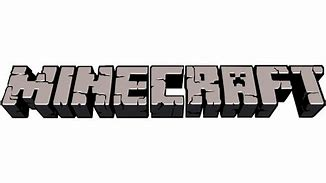
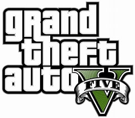
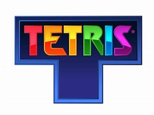
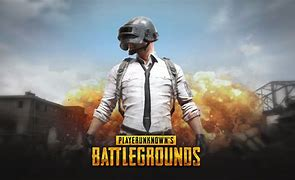
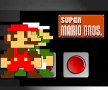

| Videojuegos | Desarrollador | Año de Lanzamiento | Ventas e Imagen | Imagen |
|---|---|---|---|---|
| Minecraft | Mojang Studios | 2011 | 150 Millones de Copias Vendidas |  |
| GAT V | Rockstar Games | 2013 | 215 Millones de copias vendidas |  |
| Tetris | EA | 1984 | 100 Millones de Copias Vendidas |  |
| WII sports | Nintendo | 2006 | 82.9 Millones de copias vendidas | |
| PUBG | PUBG corp | 2016 | 75 Millones de copias vendidas |  |
| Super Mario Bros | Nintendo | 1985 | 58 Millones de copias vendidas |  |
Durante bastante tiempo ha sido complicado señalar cual fue el primer videojuego, principalmente debido a las múltiples
definiciones
de este que se han ido estableciendo, pero se puede considerar como primer videojuego el Nought and crosses,
también llamado OXO
, desarrollado por Alexander S.Douglas en 1952. El juego era una versión computerizada del tres en raya
que se ejecutaba sobre la
EDSAC y permitía enfrentar a un jugador humano contra la máquina.
En 1958 William Higginbotham creó, sirviéndose de un programa para el cálculo de trayectorias y un osciloscopio, Tennis for
Two (tenis para dos): un simulador de tenis de mesa para entretenimiento de los visitantes de la exposición Brookhaven National
Laboratory.
Este videojuego fue el primero en permitir el juego entre dos jugadores humanos. Cuatro años más tarde Steve Russell, un
estudiante del Instituto de Tecnología de Massachussets, dedicó seis meses a crear un juego para computadora usando gráficos
vectoriales: Spacewar.
En 1966 Ralph Baer empezó a desarrollar junto a Albert Maricon y Ted Dabney, un proyecto de videojuego llamado Fox and
Hounds dando inicio al videojuego doméstico. Este proyecto evolucionaría hasta convertirse en la Magnavox Odyssey, el primer
sistema doméstico de videojuegos lanzado en 1972 que se conectaba a la televisión y que permitía jugar a varios juegos
pregrabados.
A principios de los años 90 las videoconsolas dieron un importante salto técnico gracias a la competición de la llamada
"generación de 16 bits" compuesta por la Mega Drive, la Super Nintendo Entertainmet de Nintendo, la PC Engine de NEC,
conocida como Turbografx en occidente y la CPS Changer de (Capcom).
En el 2000 Sony lanzó la anticipada PlayStation 2 y Sega lanzó otra consola con las mismas características técnicas de la
Dreamcast, nada más que venia con un monitor de 14 pulgadas, un teclado, altavoces y los mismos mandos llamados Dreamcast
Drivers 2000 Series CX-1. Microsoft entra en la industria de las consolas creando la Xbox en 2001.